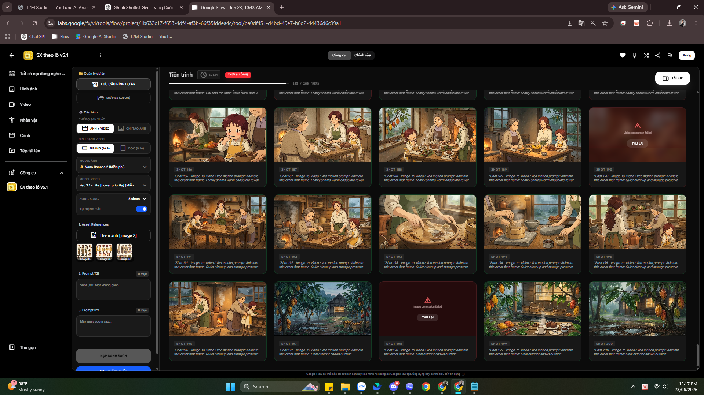

Story logic
Concept, arc, food/process và visual direction cho từng episode.
AI Production System / 2026
Hệ thống multi-agent và batch tool cho Google Flow, được thiết kế để đưa một video YouTube dài từ story logic đến hàng loạt shot AI có continuity — nhanh hơn, có kiểm soát hơn.

BATCH PRODUCTION INTERFACE / GOOGLE FLOW01 / OUTCOME
Hệ thống được build và dùng để sản xuất nội dung dài cho kênh Dreamy Days Journal. Mục tiêu là xử lý bài toán khối lượng shot lớn, giữ hình ảnh nhất quán và giảm thời gian thao tác thủ công giữa prompt, ảnh first frame và video.
Jan–Jun 2026: 2.07M views · 236.6K watch hours · +14.5K subscribers. Số liệu được đối chiếu từ YouTube Studio.
02 / SYSTEM DESIGN
Thay vì tạo từng prompt, chờ từng ảnh và tự tải từng video, tôi thiết kế workflow có cấu trúc sản xuất rõ ràng trước khi đưa prompt pack vào tool để chạy theo lô.
Concept, arc, food/process và visual direction cho từng episode.
8 vai trò logic, đầu vào/đầu ra rõ ràng, checkpoint và audit.
Reference sheets theo cast của từng episode để khóa continuity.
Shot-based TTI và I2V prompts theo logic đã được kiểm tra.
Chọn model, ratio, reference và nạp prompt pack để chạy hàng loạt.
Tự tạo first frame → tạo video → tải về và đặt tên theo shot.
03 / VISUAL CONTINUITY
Ví dụ dưới đây là hai character sheets trong một cast. Hệ thống hỗ trợ nhiều reference sheets tùy số nhân vật của từng episode; chúng được dùng để hạn chế visual drift trước khi batch generation.


04 / MY ROLE
Vai trò của tôi không dừng ở việc viết prompt. Tôi xác định logic nghiệp vụ, quy tắc continuity, các cổng duyệt và cách giao việc giữa các vai trò; sau đó dùng Codex và các công cụ AI để hiện thực thành workflow có thể vận hành.
05 / GENERATED SHOTS


RESULT CHANNEL